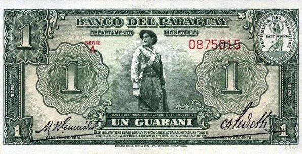
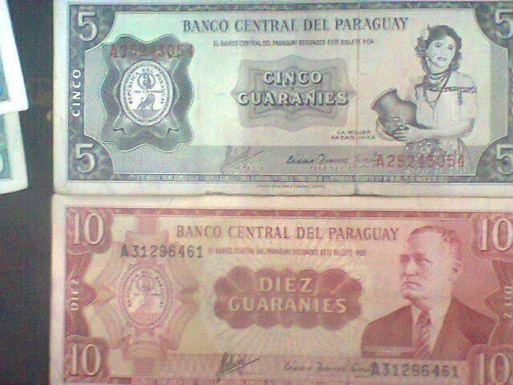
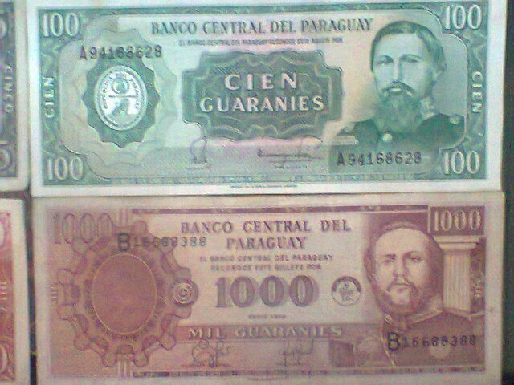
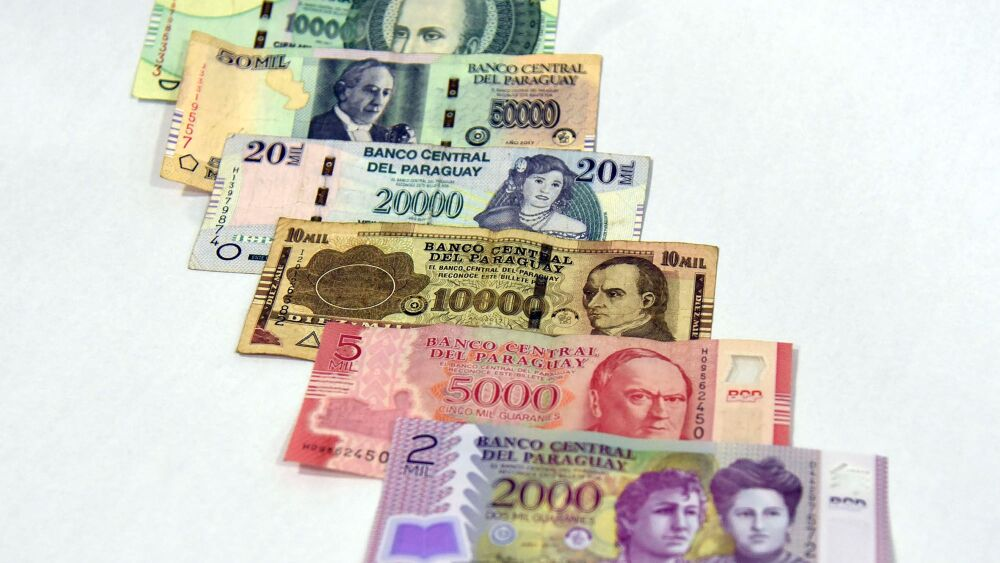

Historia del Billete
El real fue la moneda de curso legal en Paraguay, se mantuvo vigente hasta el año 1856, cuando fue reemplazada por el peso paraguayo.
Inicialmente, el real colonial español era distribuido en el país. En 1813, fue sustituida por el real argentino. En 1845, Paraguay comenzó a emitir sus propios reales. Dieciséis reales de plata equivalía, a un escudo de oro. En 1856, el peso paraguayo fue presentado y puesto en circulación, valiendo cada peso un total de ocho reales. El real continuó circulando como fracción del peso hasta 1870, año en el que Paraguay decimalizó su moneda de aquel entonces.
El peso fue la moneda de Paraguay entre 1856 y 1944. Sustituyó al real paraguayo a razón de 8 reales = 1 peso. Hasta 1870, el peso se subdividía en 8 reales. Paraguay entonces decimalizó su moneda, dividiéndose esta en 100 centésimos = 1 peso. El nombre de la subdivisión se cambió a centavo en 1874. El peso fue reemplazado en 1944 por el guaraní a una tasa de 100 pesos = 1 guaraní.
En 1856, el Tesoro Nacional emitió billetes en denominaciones de ½ y 4 reales, 1 y 2 pesos. Estos fueron seguidos por billetes de 1 y 2 reales, 3, 4, 5 y 10 pesos en 1870. En 1870, la Tesorería General se hizo cargo de la producción de papel moneda y emitió los únicos billetes denominados en centésimos. Estos fueron los de 50 centésimos. Los billetes fueron denominados en "peso fuerte". El papel moneda denominado en reales se emitieron hasta 1871. En 1874, billetes de 10, 20 y 50 centavos fueron emitidos, en 1875 se sumó a la serie un nuevo valor: el billete de 20 pesos. En 1907, el Banco de la República emitió billetes de 5, 10, 50, 100 y 1000 pesos moneda nacional que se denomina también como 50 centavos, 1, 5 y 10 pesos oro. Los bancos privados como El Banco de Comercio y Lezica y Lanús emitieron billetes en Asunción.
Actualidad
En los primeros años de vida del guaraní, existían los céntimos y los billetes de hasta 1000 guaraníes, que eran los de mayor valor. El dólar cotizaba los 120 guaraníes por unidad durante los años 60 hasta casi mediados de los años 80, cuando los céntimos ya se dejaban de utilizar por la inflación que vendría los años siguientes. En la última mitad de la década de los 80's, se dio un pico de inflación, en el que el guaraní paso a cotizar de 120 guaraníes por dólar hasta superar 1000 guaraníes por dólar. Durante la década de 1990, el dólar cotizaba entre los 1000 y 3000 guaraníes, hasta que a comienzos del nuevo milenio, se dio nuevamente otro pico de inflación, en el durante la crisis económica de los años 2002-2003, el dólar superó los 7000 guaraníes por unidad, cotización que hasta el día de hoy no se volvió a alcanzar. Desde la década de los 2000 hasta la última década, el guaraní se mantiene entre los 4000 y 6000 guaraníes en promedio.

En la última década, la cotización más baja alcanzada fue de Gs. 3719 por dólar en agosto de 2011, la cotización más baja desde el año 2001, debajo del umbral de los 4000 guaraníes por dólar, que no se volvió a repetir desde entonces. La cotización volvió a superar los 6000 guaraníes por dólar en el mes de octubre de 2018, cotización que no se superaba más desde el mes de enero de 2006. Desde finales del año 2018 hasta la actualidad, el dólar cotiza por encima de los 6000 guaraníes (en promedio). Durante la Pandemia de coronavirus, en el segundo semestre del año 2020, el dólar rondó los 7000 guaraníes, llegando cerca de los niveles históricos de hace casi veinte años.